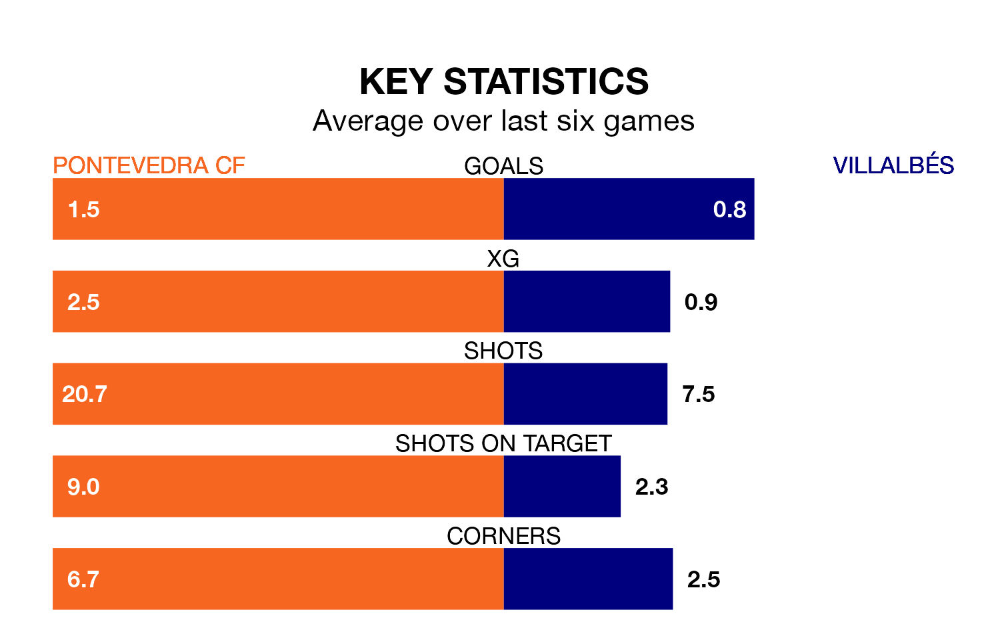

Two of the Segunda División RFEF Group 1's meanest defences go head-to-head at Estadio Municipal de Pasarón on Sunday, when Pontevedra CF host Villalbés.
Only three sides – Ourense CF, Zamora CF and Club Marino de Luanco – have conceded fewer goals than Pontevedra to date: the home side have let in just 31 goals in 33 games.
Villalbés have conceded the same number of goals in 33 games, giving them the joint-fourth tightest back line so far this season.
Key to Pontevedra's home form has been Eduardo Daniel Sousa Iglesias, who has allowed 0.64 goals past him per 90 minutes, compared to 0.85 for Alejandro Santomé García in the opposite net.
Pontevedra are second in the table after 33 games, of which they have won 18 and drawn 11, earning 65 points.
Villalbés are 12 places behind the home side in 14th, with eight wins and 13 draws putting them on 37 points.
Pontevedra are in mixed form in the Segunda División RFEF Group 1, with two wins and three draws from their last six games.
With a win and three draws over that period, the visitors' form is worse – they have taken six points from 18, compared to Pontevedra's nine.
Pontevedra's last match was on April 28, a 2-2 draw against Deportivo La Coruña B, with Mario Gómez Gómez and Oscar Castellano Zamora getting the goals for Pontevedra.
Villalbés beat Coruxo 2-0 last time out, also on April 28, with Javier Rey Lugilde on the scoresheet.
Updated: 12:00 (UTC), 02/05/24